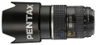

器材库 > 120中幅镜头 > 645 FA 80-160/4.5

详细规格
发布日期
1999-04
焦距
80mm-160mm
最大光圈
f/4.5
最小光圈
f/32
视角（对角）
47-24.5
镜头结构
11片/10组
最近对焦距离
100cm
滤镜口径
77mm
镜头卡口
P645AF
防抖
否
颜色
黑色
尺寸
85×130.5mm
重量
1010g
熊猫出没注意2006-02-05 15:024.67 分
操作性 5.00耐用性 4.50性价比 4.50解像力 4.00色彩还原 5.00机械结构 5.00
dorati2003-06-12 23:424.75 分
操作性 4.50耐用性 5.00性价比 5.00解像力 4.50色彩还原 5.00机械结构 4.50
靓女摄影师2003-06-12 14:314.5 分
操作性 4.50耐用性 4.50性价比 5.00解像力 4.50色彩还原 4.00机械结构 4.50
产品图 / 样片
宾得 645 FA 80-160/4.5
评测 / 相关文章
该产品暂无存档的评测文章